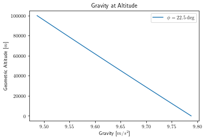
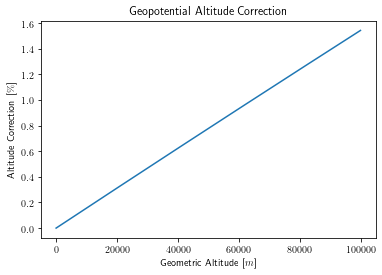
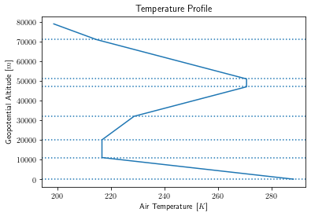
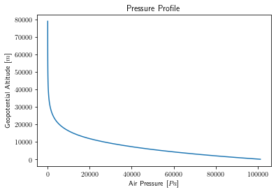
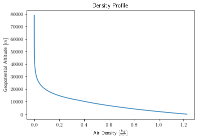
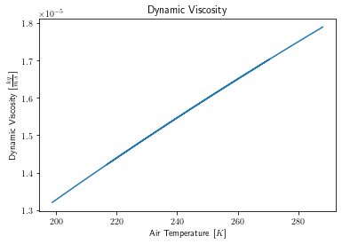

Algorithms¶
Geodetic Model¶
Input(s) |
Units |
Output(s) |
Units |
|||
|---|---|---|---|---|---|---|
\(\phi\) |
Launch site latitude |
\(rad\) |
\(\gamma\) |
Gravity at sea level |
\(m\) |
|
\(h_{G}\) |
Geometric altitude (MSL) |
\(m\) |
\(\gamma_h\) |
Gravity at altitude |
\(m\) |
|
\(h\) |
Geopotential altitude (MSL) |
\(m\) |
To determine the local gravitational acceleration, the WGS 84 geodetic model is used from NGA.STND.0036_1.0.0_WGS84 (2014-07-08) 1.
From launch site latitude \(\phi\), the normal gravity \(\gamma\) is found on the ellipsoidal surface (Somigliana’s formula): 1 (pp. 4-1)
Then, \(\gamma\) is used to find normal gravity \(\gamma_h\) at a geometric height \(h_G\) above the ellipsoid: 1 (pp. 4-3)

The local geocentric radius of earth is found using the geometry of the ellipsoid: 2
This allows the geopotential altitude to be determined: 3 (pp. 8)
The difference between geometric and geopotential altitude is nonzero, but does not become significant until high altitudes; for example, at a geometric altitude of 65 km the geopotential altitude is ~1% less.

Constant(s) |
Value |
Units |
|
|---|---|---|---|
\(\gamma_e\) |
Normal gravity at the equator (on the ellispoid) |
9.7803253359 |
\(\frac{m}{s^2}\) |
\(k\) |
Somigliana’s Formula - normal gravity formula constant |
1.931852652458e-3 |
- |
\(e\) |
First eccentricity of the ellispoid |
8.1819190842622e-2 |
- |
\(a\) |
Semi-major axis of the ellipsoid |
6378137.0 |
\(m\) |
\(b\) |
Semi-minor axis of the ellipsoid |
6356752.3142 |
\(m\) |
\(f\) |
WGS 84 flattening (reduced) |
3.3528106647475e-03 |
- |
\(m\) |
Normal gravity formula constant (\(\frac{\omega^2 a^2 b}{GM}\)) |
3.449786506841e-3 |
- |
Atmosphere Model¶
Input(s) |
Units |
Output(s) |
Units |
|||
|---|---|---|---|---|---|---|
\(h\) |
Geopotential altitude (MSL) |
\(m\) |
\(T\) |
Temperature |
\(K\) |
|
\(g_0\) |
Gravity at sea level |
\(\frac{m}{s^2}\) |
\(p\) |
Pressure |
\(Pa\) |
|
\(T_0\) |
Launch site ambient temperature |
\(K\) |
\(\rho\) |
Density |
\(\frac{kg}{m^3}\) |
|
\(p_0\) |
Launch site ambient pressure |
\(Pa\) |
\(a\) |
Speed of sound |
\(\frac{m}{s}\) |
|
\(\mu\) |
Dynamic viscosity |
\(\frac{kg}{m \cdot s}\) |
The US Standard Atmosphere 1976 3 is used to determine the atmospheric quantities at a given altitude.
The temperature gradient (also known as “lapse rate”) is given across several altitude regions: 3 (pp. 3)
Geopotential Altitude [\(km\)] |
Temperature Gradient [\(\frac{K}{km}\)] |
|---|---|
0 |
-6.5 |
11 |
0.0 |
20 |
+1.0 |
32 |
+2.8 |
47 |
0.0 |
51 |
-2.8 |
71 |
-2.0 |
84.8520 |
n/a |
The ambient temperature at a given altitude can be found with a simple linear relationship: 3 (pp. 10)
where \(T_1\) is the temperature at the previous region boundary.

The pressure profile for an isothermal region (\(\frac{dT}{dh} = 0\)) is: 4 (pp. 75)
While the pressure profile for a gradient region (\(\frac{dT}{dh} \neq 0\)) is found by: 4 (pp. 76)
Again, where \(p_1\) is the pressure at the previous region boundary. To initialize this model, an initial temperature \(T_0\) and pressure \(p_0\) at ground level is propagated upwards to generate the values at each boundary.

With temperature and pressure known, the density at altitude is simply found from the equation of state for a perfect gas: 4 (pp. 58)

The speed of sound \(a\) is given as a function of temperature: 4 (pp. 107)
Finally, Sutherland’s Law 5 is used to determine the dynamic viscosity of air \(\mu\):

Constant(s) |
Value |
Units |
|
|---|---|---|---|
\(R\) |
Specific gas constant of air |
287.053 |
[\(\frac{J}{kg \cdot K}\)] |
\(\gamma\) |
Specific heat ratio of air |
1.40 |
- |
\(T_{ref}\) |
Reference temperature |
273.15 |
[\(K\)] |
\(\mu_{ref}\) |
Viscosity of air at \(T_{ref}\) |
1.716e-5 |
[\(\frac{kg}{m \cdot s}\)] |
S |
Sutherland constant |
110.4 |
[\(K\)] |
References¶
- 1(1,2,3)
National Geospatial-Intelligence Agency (NGA). (2014). Department of Defense World Geodetic System 1984. https://earth-info.nga.mil/php/download.php?file=coord-wgs84
- 2
Geocentric radius. (2022, February 10). In Wikipedia. https://en.wikipedia.org/wiki/Earth_radius#Geocentric_radius
- 3(1,2,3,4)
National Oceanic & Atmospheric Administration (NOAA). (1976). U.S. Standard Atmosphere, 1976. https://www.ngdc.noaa.gov/stp/space-weather/online-publications/miscellaneous/us-standard-atmosphere-1976/us-standard-atmosphere_st76-1562_noaa.pdf
- 4(1,2,3,4)
Anderson, J. D. (1989). Introduction to Flight (3rd ed.). McGraw-Hill.
- 5
Sutherland’s law. (2008, October 25). CFD Online. Retrieved February 10, 2022, from https://www.cfd-online.com/Wiki/Sutherland%27s_law